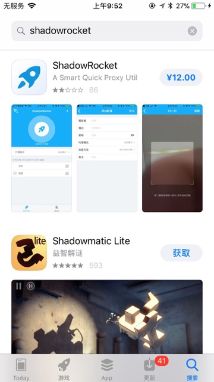
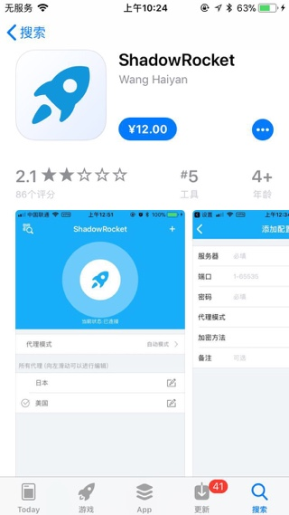
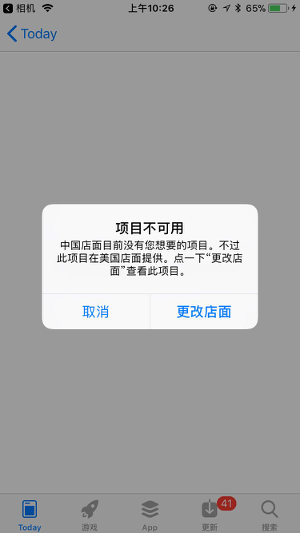
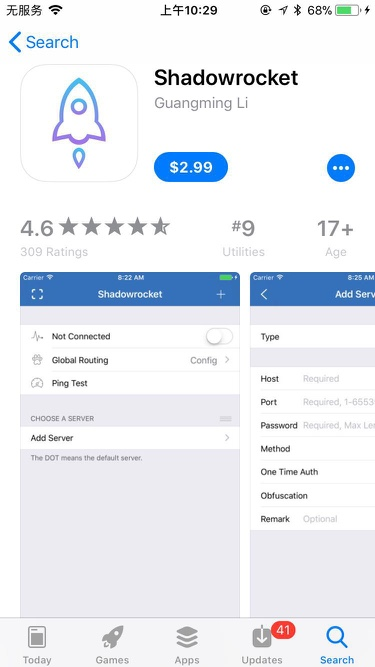
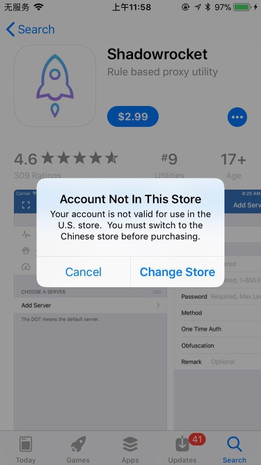
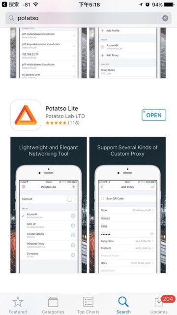

iOS中的Shadowsocks客户端
iOS中的Shadowsocks客户端，也有多种。
可以参考Shadowsocks官网中：Shadowsocks - Clients介绍的：
不过想要使用支持最新加密方式chacha20-ietf-poly1305的客户端的话，目前只有这几个：
iOS的ss客户端：shadowrocket
评分低的Wang Haiyan的shadowrocket
国内账号的AppleID登录后的国内AppStore可以搜索到

不过貌似看了下，评分只有2.8分，很差啊：

难道不是原版？然后注意到作者是：Wang Haiyan
评分高的Guangming Li的shadowrocket
而后来去google搜到的是：Guangming Li的Shadowrocket on the App Store，评分很高：4.6分，估计是才是正版。
用iPhone的相机去扫码页面二维码，打开后，跳转到AppStore中，但是提示：
项目不可用
中国店面目前没有您想要的项目。不过此项目在美国店面提供。点一下"更改店面"查看此项目。

然后点击更改店面，去看看效果，竟然还真能直接切换AppStore的地区，然后可以搜索到，看起来是正宗的shadowrocket了：

本来打算去安装试试效果，发现要收费$2.99，所以还是算了。
不过点击后发现，好像没法买Account Not in This Store：

所以，虽然AppStore可以自动帮你切换地区，但是如果你的苹果账号AppleID不是美国的，还是无法下载此处正宗美国版的shadowrocket。还是需要美国的AppleID才可以下载和安装。
iOS的ss客户端：Potatso/Potatso Lite
国内账号的AppleID登录后的国内AppStore搜索不到
估计是被国家和谐了，不允许上架到国内的AppStore市场
如何才能从iPhone的AppStore中搜索并下载到Potatso？
网友提供了一些方式，供参考：
- 把AppleID的
国家/地区设置成加拿大，支付方式选择none，设置成其它国家也可以，但是可能需要有当地的信用卡才行。然后下载potatso lite，只有这是免费的，可以不用支付。下载完成后把国家地区设置回来即可。 - 去淘宝买个其他国家appple id，然后再去美国的app store就可以下载了Potatso
- 
- 见过别人用
iPhone+自己的国外的appleid，在AppStore上可以搜到potatso，然后就可以下载并安装，然后扫描添加服务器配置后，就可以正常翻墙了